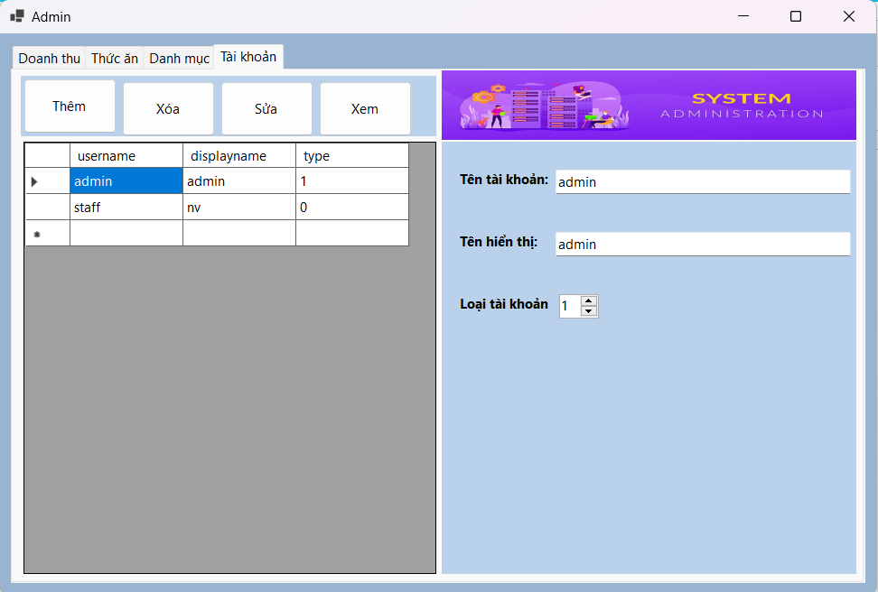

Hướng dẫn sử dụng màn hình Nhân viên.
Muốn thêm Nhân viên chọn vào ô bên phải để thêm, sau khi thêm Nhân viên mình muốn vào thì ấn vào nút Thêm phía bên trên.
Nếu Thêm thành công sẽ hiện lên thông báo là: Thêm thành công.
Còn Thêm vào không đúng sẽ hiện thông báo là: Thêm thất bại.
Muốn xóa Nhân viên thì chọn vào Nhân viên muốn xóa, bấm vào nút Xóa phía trên để xóa Nhân viên.
Nếu Xóa thành công sẽ hiện lên thông báo là: Xóa thành công.
Còn Xóa vào không đúng sẽ hiện thông báo là: Xóa thất bại.
Muốn Sửa Nhân viên chọn vào ô bên phải để sửa, sau khi sửa Nhân viên thì ấn vào nút Sửa phía bên trên.
Nếu Sửa thành công sẽ hiện lên thông báo là: Sửa thành công.
Còn Sửa vào không đúng sẽ hiện thông báo là: Sửa thất bại.